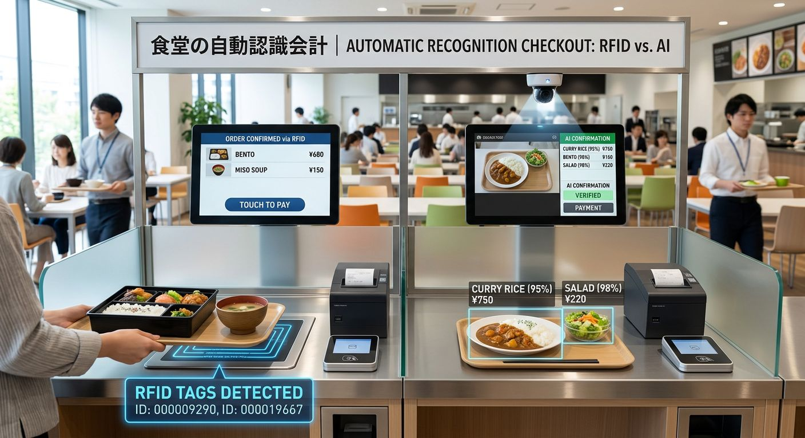

What you'll learn - How RFID recognition and AI image recognition each work - A comparison of accuracy, speed, cost, flexibility - The weaknesses of AI image recognition and how to improve accuracy - How to choose the right method for your cafeteria
In corporate cafeterias, school lunch programs, and hospital or care facilities, various automated recognition technologies have been introduced to shorten checkout waiting times and improve operational efficiency.
Two representative methods are RFID recognition, which reads an IC tag attached to the dish, and AI image recognition, which uses a camera and AI to identify the food.
RFID is a mature technology that has been used in cafeteria systems for about 20 years, excelling at fast, stable recognition. AI image recognition, which has spread rapidly in recent years, requires no tags on dishes and adapts easily to menu changes.
In terms of the evolution of cafeteria systems, RFID recognition can be positioned as the first-generation revolutionary technology, and AI image recognition as the second-generation revolutionary technology. Where RFID achieved automated checkout by "reading a tag" as the first generation, AI image recognition opened up a new, tag-free automation by "looking at the food itself to identify it" as the second generation.
However, neither is superior in every cafeteria. The right method differs depending on whether you prioritize recognition accuracy, or operational flexibility and maintainability.
This article compares how both methods work, their characteristics, and points to note when introducing them.

Conclusion — Which should you choose, RFID or AI image recognition?
If you prioritize stable accuracy and processing speed, choose "RFID recognition." If you value flexibility for menu changes, freedom in dish operation, and lower introduction cost, "AI image recognition" is the strong choice.
RFID reads the dish tag, so it is unaffected by appearance and delivers high accuracy and speed — but dedicated dishes and tags must be purchased and replaced, making total cost higher. AI image recognition can use existing dishes and adapts well to daily menus, but similar-looking dishes are prone to misrecognition, so combining it with dish differentiation and staff confirmation is effective. For cafeterias with many similar dishes, a hybrid method combining dish data and image recognition is also a realistic option. Note that RFID tags withstand only about 85°C, so in sites that use many dishes for heated cooking or high-temperature sterilization, RFID becomes difficult to use and AI image recognition has the advantage.
In a nutshell
- Priority on accuracy & speed → RFID: reads dish tags, unaffected by appearance, high accuracy and speed. Suits fixed-menu cafeterias.
- Priority on flexibility & cost → AI image recognition: uses existing dishes, strong with menu changes. Suits daily-menu cafeterias.
- Total cost of ownership: RFID > AI (RFID needs dedicated dishes/tags and periodic replacement).
- AI's weakness: misrecognizing visually similar dishes — mitigate with dish differentiation, standardized plating, and staff confirmation.
- RFID's biggest weakness: tags withstand only about 85°C — unsuitable for dishes that are heated or sterilized at high temperature, while AI image recognition is free from this limit.
- If in doubt: a hybrid method combining dish data and image recognition is realistic.
1. What is RFID recognition?
RFID stands for "Radio Frequency Identification," a technology that reads IC tag information contactlessly using radio waves.
In cafeterias, an RFID tag is attached to or embedded in the bottom of the dish, and the tag information is linked to the dish name and price for billing.
How RFID recognition basically works
- Attach an RFID tag to each dish
- Link the tag ID with the dish name and price in the system
- The user places the dish holding the food on the checkout counter
- The RFID reader reads multiple tags at once
- The POS system calculates the total amount
What RFID recognizes is not the food itself but "the tag attached to the dish." As long as the dish-to-menu combination is correctly managed, billing is stable and unaffected by plating or appearance.
Advantages of RFID recognition
High accuracy and stability
If tags are undamaged and there are no interference factors or system misconfigurations, recognition is extremely accurate.
Because it is unaffected by food color, shape, plating, or lighting, even visually similar dishes are distinguished without problems.
Fast reading
Simply placing multiple dishes on the counter reads all tags together. Since no image analysis is required, processing time is generally short — suitable for peak times such as lunch breaks.
Mature technology
RFID has long been used in cafeterias, logistics, and retail. Operational know-how has accumulated, and stable operation can be expected in a well-designed environment.
Challenges of RFID recognition
Dish and tag introduction costs
An RFID tag must be attached to each dish, so the more dishes introduced, the higher the initial cost. When tags are embedded, dedicated dishes may be required, and existing dishes may not be usable as-is.
Handling tag damage and deterioration
Dishes are used in an environment of repeated washing, heating, and impact. Since a damaged tag can no longer be read, regular inspection and replacement are necessary.
Heat-resistance limit (RFID's biggest weakness)
RFID tags generally withstand only up to about 85°C. As a result, they are difficult to use on dishes subjected to heated cooking, high-temperature holding, or hot-air sterilization and drying, because the tags easily deteriorate or break from heat. This is one of RFID's biggest weaknesses, requiring particular attention in cafeterias that use many dishes in high-temperature environments. AI image recognition is free from this heat limit because the dishes carry no electronic parts.
In particular, cafeterias with strict hygiene requirements for food-poisoning prevention may be required to sterilize dishes with heat of 85°C or higher. In such facilities, RFID tags — with a heat limit of about 85°C — cannot withstand the sterilization process, so an RFID recognition system cannot be adopted. As a result, there are cases where the only option is an AI image recognition system, since its dishes carry no electronic parts. For hospitals, care facilities, and school lunch programs with strict hygiene standards, this can be the decisive factor in choosing a method.
Managing dish-to-menu combinations
With RFID, dishes or tags must be correctly matched to menu information. For example, plating a differently priced dish on the wrong plate can result in an incorrect amount even if the tag is read normally. In other words, even with high read accuracy, RFID cannot prevent operational mistakes during serving.
Setup work when changing the menu
When changing menus or prices, the link between tags and the product master must be updated. Depending on the configuration, dishes may not need to be repurchased, but if you operate with fixed dish colors, shapes, and price ranges, major menu changes can burden the site.
2. What is AI image recognition?
AI image recognition is a method where AI analyzes the features of food images captured by a camera and estimates the matching dish from a pre-registered menu.
Rather than reading tag information like RFID, it judges by the "appearance" of the food and dishes.
How AI image recognition basically works
- Register and train images of food and dishes in the AI in advance
- The user places the food at the designated position on the checkout machine
- The camera captures the entire tray
- The AI analyzes the features of the food and dishes
- It matches against the registered menu and judges the most likely dish
- The POS system matches the price and displays the total
Depending on the system, not only the food but also the color, shape, size, and plating position of the plate may be used as recognition cues.
Advantages of AI image recognition
No RFID tags needed
There is no need to attach a tag to each dish or purchase dedicated dishes. If existing dishes can be used, dish-related initial costs are reduced. There is also no work to manage tag failures or losses.
Easy to adapt to menu changes
To add a new menu, you basically register images and product information and update the AI model as needed. For cafeterias with many seasonal or daily menus, this can adapt more flexibly than methods that physically change dishes or tags.
High freedom in dish operation
Since dishes and food need not be fixed in a complete one-to-one relationship, it is easier to accommodate dish changes and replacements. In practice, however, a specific-dish-for-a-specific-food operation is sometimes adopted to raise accuracy.
Easy to extend to data utilization
By using the information obtained through AI image recognition, you can analyze sales volume, demand by time of day, and menu selection trends. Depending on the system, it can be extended to reducing leftovers, optimizing cooking volumes, and displaying nutrition information.
3. Weaknesses and cautions of AI image recognition
AI image recognition excels at flexibility, but because it estimates food from images, it carries recognition risks different from RFID.
Visually similar dishes are hard to distinguish
Dishes that are hard even for humans to tell apart are also difficult for AI. For example:
- Curry and hashed-beef rice
- Soy-sauce ramen and miso ramen
- Karaage and tatsuta-age (fried chicken)
- White-fish fry and croquette
- Small side dishes with identical plating
- Menus differing only in sauce or toppings
The more similar the image features, the higher the chance of misrecognition.
The same dish can look different
Even with the same dish name, the appearance can change greatly depending on cooking and plating.
- Portion size varies by day
- Ingredients cut or oriented differently
- Differences in browning or frying color
- Amount or position of sauce differs
- Side garnishes are changed
- Food overlaps and is hidden
- Ingredients change with season or supply
The greater the gap between registered images and the food actually served, the more recognition rates may drop.
Affected by the shooting environment
AI image recognition is affected by lighting, shadows, reflections, camera dirt, and food placement. In particular, glossy dishes, transparent lids, and steam can make feature extraction difficult. Stable recognition requires environment design including not only the camera but also lighting and shooting position.
Unregistered menus cannot be judged correctly
AI basically judges from menus registered and trained in advance. If an unregistered dish is served, it may be recognized as a different, visually close product. Continuous maintenance is required, such as registering new menus, adding images, and verifying recognition results.
4. Operational tips to improve AI image recognition accuracy
AI image recognition does not automatically become highly accurate just by introducing it. It is important to combine an easy-to-recognize menu structure with on-site operation.
Use dish-and-menu combinations as supplementary information
Even with AI, the color, shape, pattern, and size of dishes can be used as judgment cues. For example, even similar-looking dishes become easier to identify when plated on different dishes.
- Serve mains on large plates, sides in small bowls
- Change dish color by price range
- Use differently shaped plates for similar dishes
- Use different containers for different-size products
This is not complete one-to-one management like RFID, but operation to support the AI's judgment.
Do not serve visually similar dishes at the same time
It is also effective not to line up hard-to-distinguish menus in the same time slot. For example, serving two very similar dishes on different days reduces the candidates the AI must compare.
Standardize plating
Keeping the amount, arrangement, garnish, and sauce application consistent reduces the gap from registered images and stabilizes recognition. Standardized plating helps not only accuracy but also cost management and quality consistency.
Register multiple image patterns
Registering images of one dish from various angles, portions, browning, and garnishes makes it easier to handle appearance changes. Beyond initial registration, it is important to continuously add misrecognized images from actual operation and improve.
Have a person confirm when confidence is low
AI recognition results usually carry a "confidence" or "reliability" score. When confidence falls below a threshold, displaying candidates for the user or staff to select helps prevent incorrect billing. Rather than aiming only for full automation, a design of "AI judgment plus human confirmation only when needed" is realistic.
5. RFID vs. AI image recognition comparison
| Item | RFID recognition | AI image recognition |
|---|---|---|
| Recognition target | RFID tag on the dish | Image of food/dishes |
| Accuracy | Very high and stable | Varies by menu and shooting conditions |
| Processing speed | Very fast | Fast, but analysis can take time |
| Appearance impact | Not affected | Affected by lighting, plating, color, shape |
| Dedicated tags | Required | Not required |
| Dedicated dishes | May be required by configuration | Generally not required, but dishes may be differentiated to raise accuracy |
| Initial cost | Tags, dishes, readers needed | Camera, lighting, terminal, AI system needed |
| Dish heat-resistance limit | About 85°C or lower (limited by RFID tag heat resistance) | None (no limit) |
| Maintenance | Managing tags, dishes, readers | Managing camera environment, menu images, AI model |
| Menu changes | Requires tag/product master setting changes | Mainly image/product registration and model updates |
| Operational flexibility | Prone to constraints on dish operation | Relatively high |
| Main causes of misrecognition | Tag damage, read failure, linking errors | Similar dishes, plating changes, shooting environment, unregistered menus |
| Suited cafeteria | Many fixed menus; priority on speed and accuracy | Frequent menu changes; priority on flexibility |
6. Cafeterias suited to RFID
Facilities like the following can make good use of RFID's advantages:
- Relatively few menu items
- Dish-and-food combinations can be fixed
- The same menu is served for a long period
- Checkout speed is the top priority
- Users concentrate during lunch breaks
- Misrecognition should be reduced as much as possible
- Dishes and tags can be centrally managed
RFID delivers high stability in closed environments with clear operational rules.
7. Cafeterias suited to AI image recognition
On the other hand, AI image recognition is a strong option for facilities like these:
- Many daily or seasonal menus
- New menus added frequently
- Want to use existing dishes
- Want to reduce tag attaching and replacement work
- Want higher freedom in dish operation
- Want to use checkout data for demand forecasting
- Have a system to continuously improve recognition results
However, in cafeterias with many similar dishes or inconsistent plating, you should not rely on AI alone — combine dish differentiation and staff confirmation.
8. Compare introduction cost across the whole system
AI image recognition can use existing dishes as-is, keeping dish-related introduction costs down. There is no need to attach tags to each dish or purchase dedicated dishes.
RFID recognition, on the other hand, requires purchasing dedicated dishes and attaching tags. Furthermore, because dishes are used in an environment of repeated washing, heating, and impact, RFID tag damage is unavoidable. Tags that can no longer be read must be replaced, so regular maintenance work is essential.
Adding up these initial costs and ongoing maintenance burden, overall RFID recognition tends to cost more than AI image recognition.
That said, both methods incur costs beyond the main hardware:
- Checkout terminal and POS integration
- Initial setup and menu registration
- Monthly fees and support costs
- (For AI) camera/lighting equipment, AI model update and training costs
- (For RFID) dedicated dishes/tags/readers, tag inspection and replacement costs
Therefore, when deciding on a method, it is important to compare not just the hardware price but the total cost of ownership over about 3 to 5 years.
9. Summary — RFID for accuracy, AI for flexibility
RFID recognition and AI image recognition each have different strengths. Cafeteria systems have evolved from the first-generation RFID recognition that reads tags to the second-generation AI image recognition that identifies the food itself by sight. That said, the second generation does not completely replace the first — the two are used according to the situation.
RFID reads the dish tag rather than the food itself, so as long as the tags and system are fine, it achieves very high accuracy and speed. It remains an effective method today for cafeterias with fixed menu and dish configurations.
AI image recognition, meanwhile, requires no tags on dishes and adapts easily to menu changes and dish replacements. It suits cafeterias with many daily menus that seek flexible operation.
However, AI cannot always accurately recognize dishes that are hard even for humans to distinguish, or whose appearance changes greatly. After introduction, the following tips are needed:
- Differentiate dishes by food
- Do not serve visually similar dishes at the same time
- Standardize plating
- Register multiple image patterns
- Have a person confirm when confidence is low
- Continuously feed misrecognized data back into training
The key is not to judge by the performance of the technology alone. You need to evaluate menu structure, number of users, peak processing speed, on-site staff work, maintenance systems, and future changeability. If you prioritize stability and top-tier accuracy, RFID; if you value adaptability to menu changes and operational flexibility, AI image recognition. Choosing between the two according to your cafeteria's reality — and, where appropriate, considering a hybrid method combining dish data and image recognition — is a realistic approach to a smart cafeteria.
Frequently Asked Questions (FAQ)
What is the difference between RFID and AI image recognition for cafeteria checkout?
RFID recognition reads an IC tag attached to the dish via radio waves and bills based on the tag data rather than the food itself. AI image recognition uses a camera to analyze the appearance of the food and dishes, then estimates the matching item from a pre-registered menu. RFID is stable and fast on accuracy, while AI image recognition needs no tags and adapts easily to menu changes.
Which has higher recognition accuracy, RFID or AI image recognition?
RFID is superior in accuracy stability. Because it reads tag data, it is unaffected by the color, shape, plating, or lighting of the food and can distinguish visually similar dishes. AI image recognition judges by appearance, so it is more prone to misrecognition with similar dishes (e.g. curry vs. hashed-beef rice) or when plating varies.
Which costs more to introduce, RFID or AI image recognition?
In total cost of ownership, RFID tends to be more expensive. AI image recognition can use existing dishes, keeping dish-related costs down. RFID requires purchasing dedicated dishes and tags, plus ongoing tag replacement and maintenance because washing, heat, and impact damage tags over time. Compare on a 3-5 year total cost of ownership, not just hardware price.
Which dishes is AI image recognition weak at recognizing?
Dishes that are hard for humans to tell apart are also hard for AI. Examples include curry vs. hashed-beef rice, soy-sauce vs. miso ramen, karaage vs. tatsuta-age fried chicken, white-fish fry vs. croquette, small side dishes with identical plating, and menus that differ only in sauce or toppings.
How can I improve the accuracy of AI image recognition?
Use the color, shape, and size of dishes as supplementary cues; avoid serving visually similar dishes at the same time; standardize plating; register multiple image patterns per dish; and have a person confirm when the confidence score is low. A realistic design is 'AI judgment plus human confirmation only when needed,' rather than full automation.
Which cafeterias suit RFID, and which suit AI image recognition?
RFID suits cafeterias with few menu items, fixed dish-to-menu combinations, long-running menus, and top priority on checkout speed and accuracy. AI image recognition suits cafeterias with many daily or seasonal menus, frequent new items, a desire to reuse existing dishes, and an emphasis on operational flexibility and data utilization.
What is the heat-resistance temperature limit of RFID recognition?
RFID tags generally withstand only up to about 85°C. This is one of RFID's biggest weaknesses: on dishes subjected to heated cooking, high-temperature holding, or hot-air sterilization, the tags easily deteriorate or break from heat and become difficult to use. Caution is needed in cafeterias that use many dishes in high-temperature environments. AI image recognition is free from this heat limit because dishes carry no electronic parts.
📞 Request a Free PoC
AI image recognition, RFID, and weighing checkout — test the method best suited to your cafeteria in a real environment.
We handle equipment delivery, installation, and collection. No cost involved.